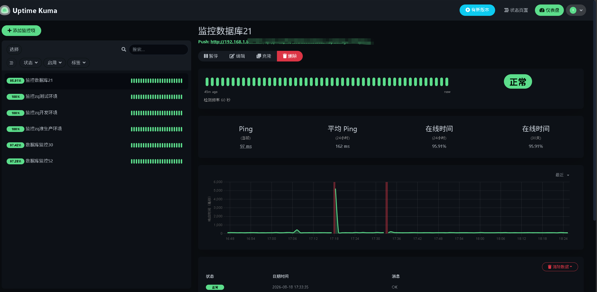
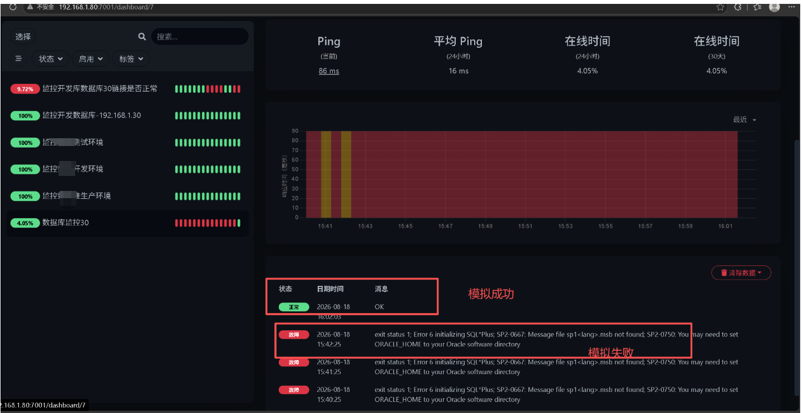
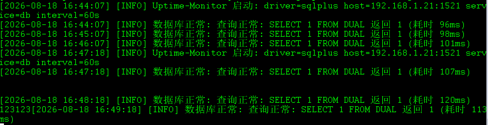
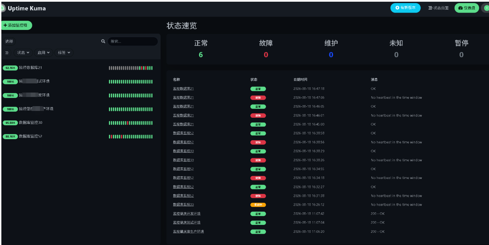
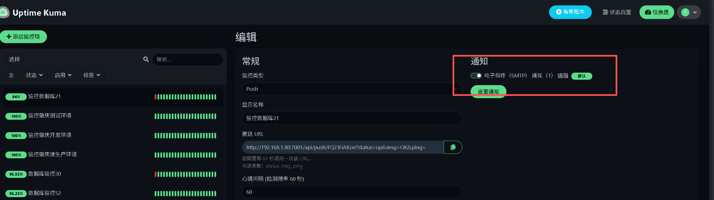
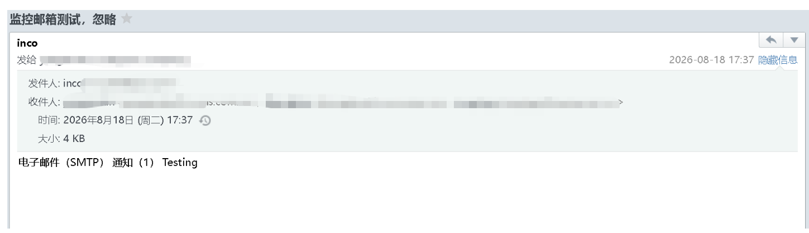

🌐 监控面板http://127.0.0.1:7001/
🐙 探针开源仓库https://github.com/pslinux/uptime-monitor.git
数据库与应用服务器监控方案 — 数据库探针 + 应用监控 + 告警通知（SMTP 邮件 / 企业微信）
flowchart TB
subgraph 用户侧
U["🖥️ 浏览器 / 运维人员"]
end
subgraph Kuma["Uptime Kuma 监控中心
(Docker, 端口 7001 → 3001)"]
Web["Web 管理界面"]
KDB[("SQLite 存储
/app/data/kuma.db")]
Engine["监控调度引擎
(HTTP / TCP / Ping / Push)"]
Notify["通知引擎"]
end
subgraph 监控目标
Oracle[("Oracle 数据库
SQL*Net 1521")]
App["应用服务器
HTTP / 业务端口"]
Svc["其他服务
(URL / 端口 / Ping)"]
end
subgraph 探针
UM["uptime-monitor
Go 数据库探针
(SELECT 1 FROM DUAL)"]
end
subgraph 通知渠道
Mail["📧 SMTP 邮箱
(企业微信邮箱)"]
WeCom["💬 企业微信
群机器人 Webhook"]
end
U -->|"HTTPS 访问 :7001"| Web
Web --> KDB
Engine -->|"HTTP(s) / TCP / Ping 监控"| App
Engine -->|"HTTP(s) / TCP / Ping 监控"| Svc
Engine <-->|"Push 上报 API (up/down/ping)"| UM
UM -->|"周期执行健康检查 SQL"| Oracle
Engine -->|"告警触发"| Notify
Notify --> Mail
Notify --> WeCom
uptime-monitor 探针周期性连接 Oracle 执行 SELECT 1 FROM DUAL，结果通过 Uptime Kuma Push API 上报（status=up|down + 延迟），由 Kuma 负责展示与告警。Oracle 本身不支持 HTTP 探活，故由 Go 探针桥接。环境：Docker（或 Node.js ≥ 14），当前部署于 127.0.0.1:7001。
# 端口映射 7001(宿主机):3001(容器), 数据持久化到宿主机 /opt/uptime-kuma/data
docker run -d --name uptime-kuma --restart=always \
-p 7001:3001 \
-v /opt/uptime-kuma/data:/app/data \
louislam/uptime-kuma:1
# 确认运行状态
docker ps | grep uptime-kumahttp://127.0.0.1:7001//opt/uptime-kuma/data/kuma.db| 操作 | 命令 |
|---|---|
| 查看日志 | docker logs -f uptime-kuma |
| 重启 | docker restart uptime-kuma |
| 停止 | docker stop uptime-kuma |
| 升级 | docker pull louislam/uptime-kuma:1 后按 2.4 流程重建 |
| 备份 | 直接拷贝 /opt/uptime-kuma/data/ 目录（含 kuma.db） |
| 卸载 | docker rm -f uptime-kuma |
docker pull louislam/uptime-kuma:1
docker stop uptime-kuma
docker rm uptime-kuma
docker run -d --name uptime-kuma --restart=always \
-p 7001:3001 \
-v /opt/uptime-kuma/data:/app/data \
louislam/uptime-kuma:1| 组件 | 角色 | 说明 |
|---|---|---|
| Uptime Kuma | 监控中心 | 负责展示、调度、告警与通知分发；数据存 SQLite |
| uptime-monitor | 数据库探针 | Go 后端，周期探测 Oracle SELECT 1 FROM DUAL，经 Push API 上报 |
| SMTP 邮箱 | 告警渠道 | 企业微信邮箱发信，异常/恢复时邮件通知 |
| 企业微信机器人 | 告警渠道 | 群机器人 Webhook 推送（需管理员权限） |
push.url：push:
url: "http://127.0.0.1:3001/api/push/YOUR_PUSH_TOKEN"探针按间隔自动上报，Kuma 收不到心跳即判定 DOWN 并触发告警。
| 监控类型 | 适用场景 |
|---|---|
| HTTP(s) | Web 应用、URL 可达性、状态码 |
| TCP 端口 | 应用服务端口连通性 |
| Ping | 主机存活 |
直接添加监控并填入目标地址即可，无需额外探针。
通知配置仅 管理员账号 可见；企业微信 Webhook 需管理员权限，当前采用 邮箱方式。
| 字段 | 值 |
|---|---|
| Hostname | smtp.exmail.qq.com |
| Port | 465 |
| Security | SSL/TLS |
| Username | 企业邮箱完整地址 |
| Password | 客户端专用密码（非登录密码） |
| From Email | 发信邮箱地址 |
| To Email | 收件人邮箱（可多个，逗号分隔） |
若 465 被网络拦截，可改用587+STARTTLS；填写后先点 Test 验证发信。
# Webhook 地址格式
https://qyapi.weixin.qq.com/cgi-bin/webhook/send?key=YOUR_KEY{{name}} {{status}} {{msg}} {{time}}| 场景 | 推荐 |
|---|---|
| 有管理员权限 | 企业微信 Webhook（群内实时触达） |
| 无管理员权限 | SMTP 邮箱（本方案当前采用） |






| 现象 | 原因 / 处理 |
|---|---|
页面显示 No heartbeat in the time window | 心跳间隔与保留时长不匹配：把心跳间隔设为探针上报周期，保留时长大于间隔 |
| Push 上报 404 | 检查 Push URL 是否带多余查询串（?status=...），只保留 .../api/push/<token> |
SP2-0667: Message file sp1<lang>.msb not found | sqlplus 缺 ORACLE_HOME：配置 db.oracle_home 指向 Instant Client 目录 |
ORA-01017: invalid username/password | 数据库账号密码错误：核对 conf/config.yaml 与 systemd 的 UM_DB_PASSWORD |
| 收不到告警邮件 | 检查 SMTP 授权码是否正确、端口 465/587 是否放行、监控是否勾选了通知 |